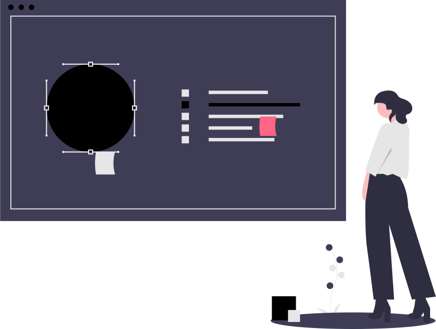

Buil Tech esta creado para proporcionar servicios tecnicos enfocados en diferentes ambitos de la computacion. Facilitando la publicidad de negocios mediante el uso de paginas web, Obteniendo mejor popularidad hacia su negocio.
 BuilTech no solo se encarga de paginas web, si no tambien el uso de otros sistemas de trabajos, como puede ser la creacion de diseños 3D, para asi tener una mejor visualizacion o diferentes tipos de vista del diseño.
El mantenimiento hacia las computadoras es fundamental para que estas funcionen correctamente, para asi evitar futuros problemas o daños en el sistemas y/o componentes aumentando el tiempo de vida de las computadoras.
 Building technology
Building technology  @buildingtechnology_bt
@buildingtechnology_bt